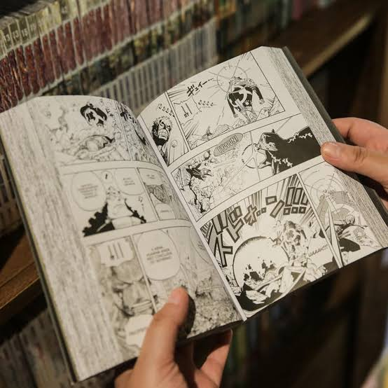

Músicas
Eu gosto muito de Deathcore. Bring Me The Horizon é uma banda que representa bem o gênero — além disso posso dizer que amo o rock em geral e música eletrônica.

Filmes
Os filmes representam o gênero da fantasia, que é um dos que mais gosto. Os títulos apresentados são Harry Potter, O Senhor dos Anéis e Anjos da Noite.


Séries
Game of Thrones e Vikings são as séries que mais gosto. Resumindo: briga de espada é daora.


Jogos
League of Legends — meu câncer favorito. Jogo desde os 14 anos. Hoje é raro, mas não parei de vez.

Mangás
Mangás são outra paixão. Mundos ricos em narrativa, arte expressiva e histórias que ficam marcadas. Uma leitura que vai muito além do entretenimento.

Hobbies
Acampar
Fugir do barulho da cidade e reconectar com a natureza.
Viajar
Conhecer lugares novos e expandir a visão de mundo.
Festivais de Música
Experiência ao vivo que não tem igual.
Comic-Con
Cultura pop, cosplay e comunidade.
Eventos Tech
Aprender sobre tecnologia e fazer networking no setor.
Objetivos Profissionais
Meu desejo é realizar a transição de carreira. Hoje trabalho na roça, tenho uma horta — mas sempre gostei da área de tecnologia. A coragem veio e estou amando o caminho.